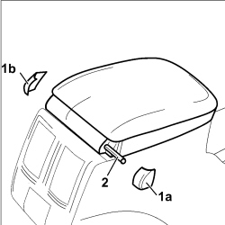
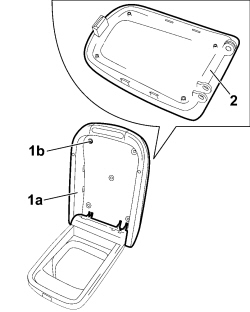

7040L24 TUNNEL TRIM COMPARTMENT FLAP - R R
- Path
- Procedures > 70 FITTINGS > 7040 BODY INTERIOR FITTINGS AND TRIM > 7040L CABIN FLOOR COVERING > 7040L24 TUNNEL TRIM COMPARTMENT FLAP - R R
- Kind
- repair procedure (removal / refitting; the operation number is the code)
- Applies to
- all engines; all production periods
- Interactive page
- https://sloeber94.github.io/elrnDB-fCrm/en/#/194001946
Applies to: all engines; all production periods
 Removing
Removing
 Refitting
RefittingLet the left and right seats slide back into the end of travel position.
1. Release the covers (1a) and (1b).
2. Release the pin and remove the flap from the oddments pocket.

Applies to: all engines; all production periods
1. Lift up the armrest flap (1a) and undo the five fixing bolts (1b).
2. Release the remove the trim from the oddments pocket armrest flap.

Applies to: all engines; all production periods
Refitting
Removing- Check that the flap is not damaged or deteriorated.
- Position the trim on the armrest flap and tighten the fixing bolts.
- Place the flap in position, insert the pin and fit the covers.
- Check that the flap closes correctly on the oddments pocket.
- Place the left and right seats back in position.